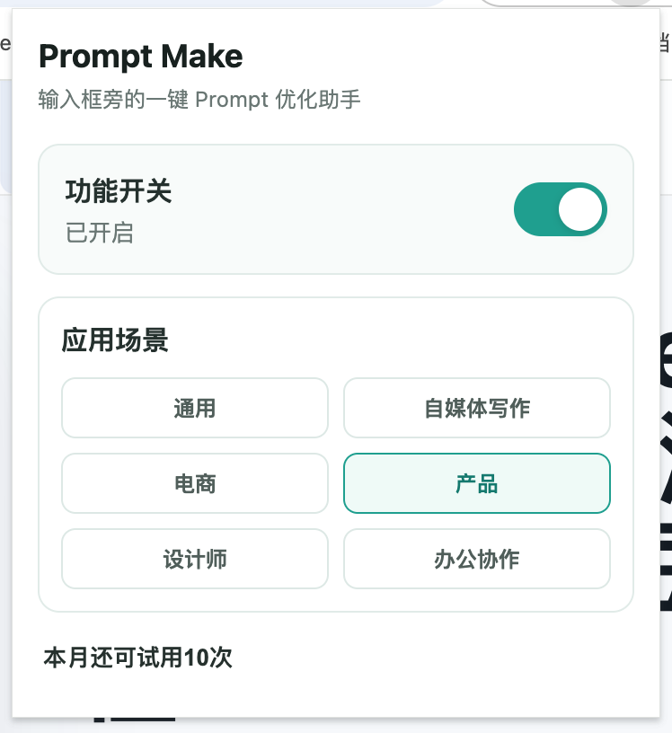
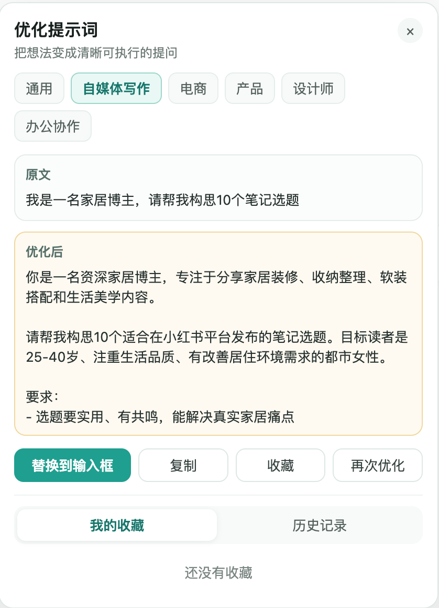
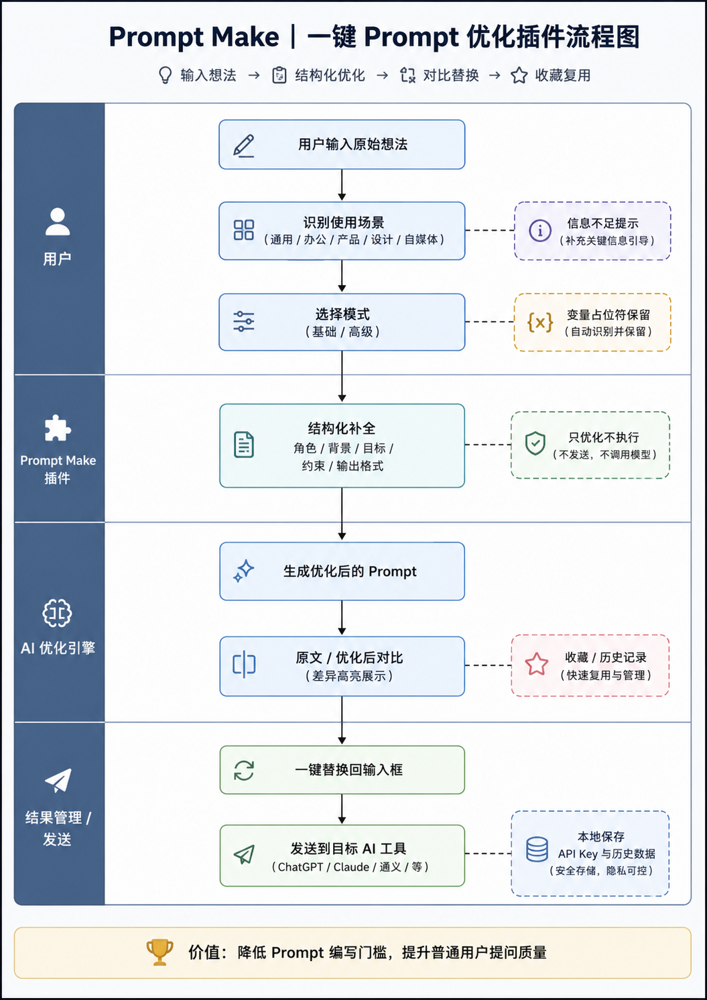
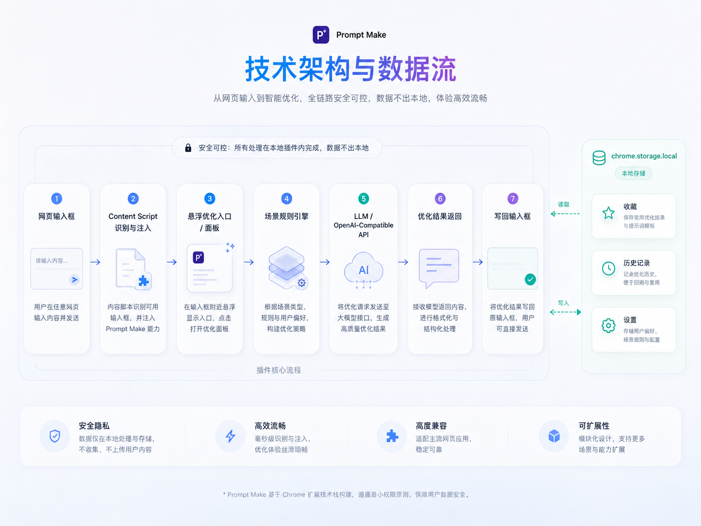

Prompt Make
去 GitHub 查看项目Prompt Make 是一款面向普通 AI 用户的 Chrome 浏览器插件。用户只需要在 ChatGPT、Gemini、智谱、Deepseek、豆包、千问等 AI 产品输入框中写下粗糙想法，点击输入框旁的「优化」按钮，即可将原始表达一键改写为结构清晰、目标明确、约束完整、可直接发送给 AI 的高质量 Prompt。
Prompt Make 是一款面向普通 AI 用户的 Chrome 浏览器插件。用户只需要在 ChatGPT、Gemini、智谱、Deepseek、豆包、千问等 AI 产品输入框中写下粗糙想法，点击输入框旁的「优化」按钮，即可将原始表达一键改写为结构清晰、目标明确、约束完整、可直接发送给 AI 的高质量 Prompt。


01/项目背景与定位
很多用户的输入是这样的：
帮我写一篇小红书
帮我做一个方案
帮我优化一下这个需求
帮我生成一个设计说明
这些表达虽然有意图，但缺少角色、背景、目标、约束、输出格式和质量标准，导致 AI 输出结果经常泛泛而谈，难以直接使用。
我在使用 trae、workbuddy 等产品时输入框旁边有增强提示词的 icon，于是想到网页端大模型的输入框旁边是否也能跟进设计一个快捷点击优化提示词的功能呢？
于是有了 vibecoding 一款提示词优化产品的想法，Prompt Make 解决的正是这个高频问题：
在用户表达需求的第一现场，低成本完成一次 Prompt 结构化升级。

02/Prompt优化工作流
输入想法 → 点击优化 → 查看原文 / 优化后 → 替换到输入框 → 复制或收藏复用
Prompt Make 的 AI 工作流分为 5 个关键步骤：
第一步：识别输入场景
插件通过 content script 识别网页中的 可输入文本区域，并在用户聚焦输入框后显示「优化」入口。
第二步：读取用户原始意图
系统将用户输入作为原始 Prompt 数据，读取用户意图。
第三步：匹配优化模式与场景模板
根据用户输入的内容智能匹配通用、办公协作、电商、产品、设计师、自媒体写作 6 类场景，让不同任务进入不同的结构化优化路径。
第四步：调用模型完成 Prompt 重写
模型根据结构化优化规则，对原始表达补充角色、目标、背景、约束、输出格式和质量标准，同时保留用户原始意图，不编造事实，不执行任务。
第五步：写回与复用
用户可以将优化后的 Prompt 一键替换回原输入框，也可以复制、收藏或再次优化。历史记录与收藏机制让一次性 Prompt 优化沉淀为个人可复用的 Prompt 资产。

03/AI技术实现与规划
1. Prompt 结构化设计
将用户的自然语言输入，重构为更适合大模型理解的任务说明，包括角色、背景、目标、限制条件、输出格式、质量标准等要素。
2. 场景化 Prompt 模板
不同用户场景需要不同的优化策略。例如：
3. 意图保持与边界控制
优化过程强调“只优化 Prompt，不执行任务”。这能有效避免模型偏离用户原始目的，也让插件的产品定位更清晰。
4. 信息不足处理
当用户原始输入缺少关键信息时，系统不直接编造，而是用“请补充：xxx”的方式提示用户完善信息，提升输出可信度。
5. 变量保留机制
对于包含 {{变量}} 的 Prompt，优化后必须逐字保留变量占位符，保证用户后续批量复用或模板化调用时不被破坏。
04 / 核心功能亮点
01 一键优化
输入框聚焦后自动显示「优化」按钮，用户无需切换页面，即可完成 Prompt 改写。
02 六大应用场景
覆盖通用、办公协作、电商、产品、设计师、自媒体写作，让 Prompt 优化从“通用润色”升级为“场景化任务重构”。
03 原文 / 优化后对比
帮助用户理解优化前后的差异，增强结果可控性，也让用户在使用过程中逐步学习高质量 Prompt 的表达方式。
04 替换、复制、再次优化
围绕用户真实操作链路设计，既支持快速写回输入框，也支持进一步迭代。
05 收藏与历史记录
将高质量 Prompt 沉淀为个人资产，帮助用户从一次性提问走向长期复用。
05 / 项目总结
Prompt Make 的核心不是“做一个更复杂的 AI 工具”，而是用一个足够轻的产品形态，解决 AI 使用链路中最普遍、最高频、最容易被忽视的问题：
用户不会问，AI 就很难答好。
通过输入框内的一键优化、场景化 Prompt 重构和个人 Prompt 资产沉淀，Prompt Make 把 Prompt Engineering 从专业技巧转化为普通用户可感知、可操作、可复用的产品能力。
它让 AI 工具的使用门槛更低，也让每一次提问更接近高质量输出。